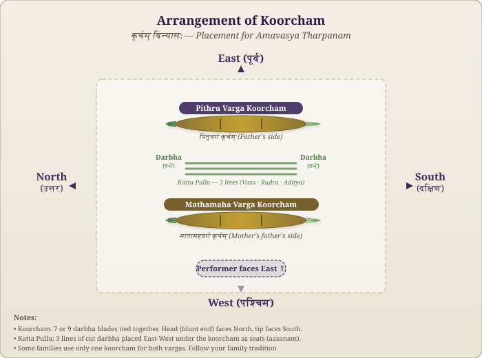

Required Items (Samagri)
Rules of Tharpanam (Niyamam)
Arrangement of Koorcham (कूर्चम् विन्यासः)

oṃ śāntiḥ śāntiḥ śāntiḥ
ॐ शान्तिः शान्तिः शान्तिः
Om Peace, Peace, Peace.
iti amāvāsyā tarpaṇaṃ sampūrṇam
Thus ends the Amavasya Tharpanam.
pitṛdevatābhyāṃ namaḥ
Salutations to the ancestral deities.
All Steps सर्वसोपानानि
The 19 steps of Amavasya Tharpanam — from Achamanam to Brahma Yagnam